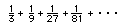
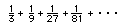
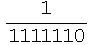

Michael, a 5th grader, finds a Pattern in Infinite Series
After coloring squares for
 ->
1 and
-> 1/2
and 1/4+(1/4)^2+...-> 1/3, he came up with the generalization
that 1/n + (1/n)^2 + (1/n)^3 + (1/n^4)… approaches the
limit 1/(n-1).
->
1 and
-> 1/2
and 1/4+(1/4)^2+...-> 1/3, he came up with the generalization
that 1/n + (1/n)^2 + (1/n)^3 + (1/n^4)… approaches the
limit 1/(n-1).
Don showed Michael how to do this in Mathematica® and Derive. Michael tried things to show how his rule works for big numbers..
The Greek symbol Sigma means sum. So this reads find the sum of 1/3 to the nth power as n goes from 1 to 2, to 3, ... to infinity and looks like this below
which approaches 1/2 as the limit. Michael did the following:
----------------------------
--------------------------------

-----------------------------------
------------------------------------
-----------------------------------------------------
Don has found that many of his students try to see what happens when they push the envelope!
A week or two later, Don asked Michael to see what happens if we start with 2/5.
Michael did a number of infinite sums, starting with
2/5 , which went to 2/3 and
74/75, which went to 74 and
7/676767677665883, which went to 7/676767677665876 and others,
and he figured out that
A/B + (A/B)^2 + (A/B)^3 + … = A/(B-A)
He also found, by himself, that the infinite sum, starting with 89/6 gets bigger and bigger, it diverges. and starting with 3/3, the series would also diverge, does not approach a number. So they talked about how A and B were related.
Michael said for the infinite geometric series to converge,
A must be < B .
Fine work Michael!!!